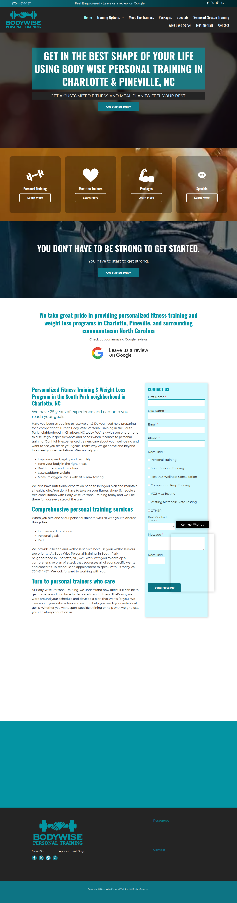

This version keeps Body Wise’s real homepage in-frame, then annotates the exact places where trust and conversion are leaking. The pitch becomes: “Here’s what we’d fix on your actual site” instead of “Trust us, imagine your brand looking like this other thing we made.”
Body Wise homepage screenshot framed like a browser, with five callouts anchored to the real page.

Instead of redesigning the whole site, show just enough of the improved components to make the fixes tangible.
Swap generic “Get Started Today” language for a consultation promise tied to weight loss, toning, and one-on-one coaching.
Pull Google reviews, years of experience, and location cues into one compact module so visitors see proof before the long copy block.
Remove builder artifacts, simplify options, and make the submission feel professional enough to trust with personal fitness goals.